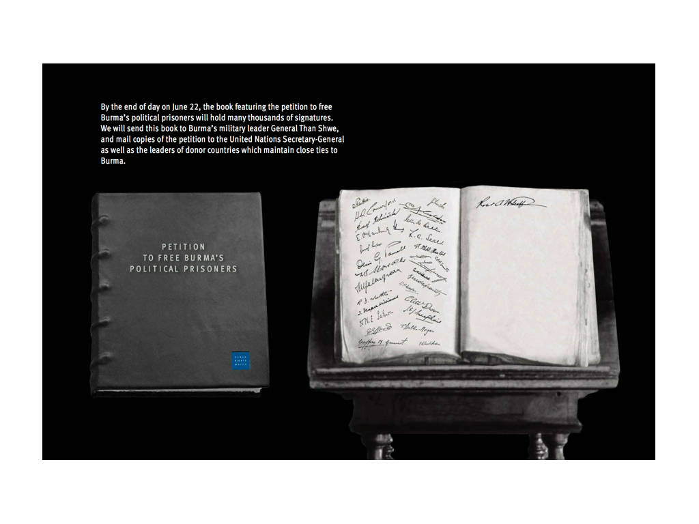
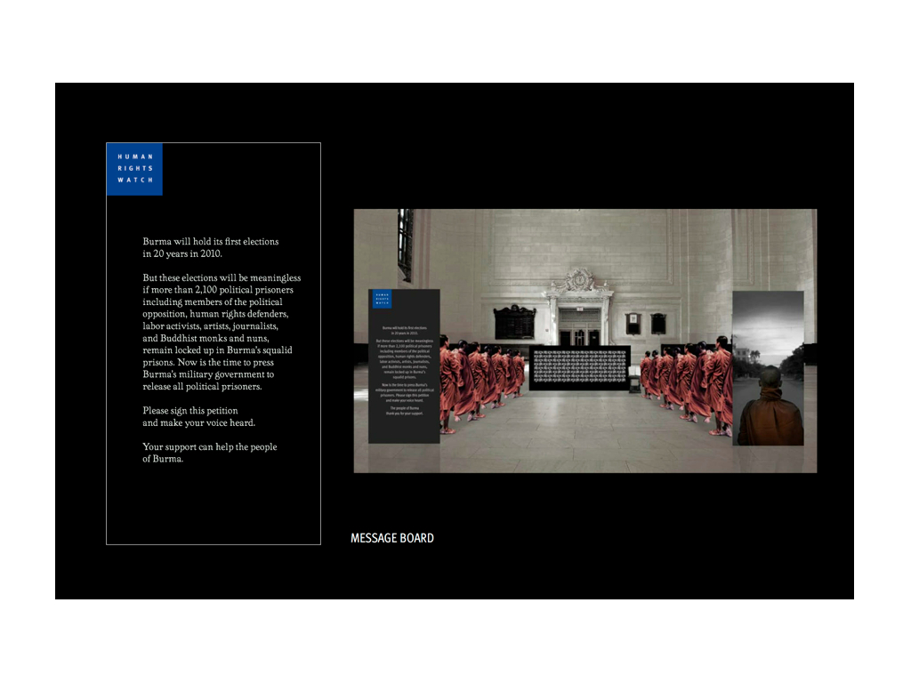
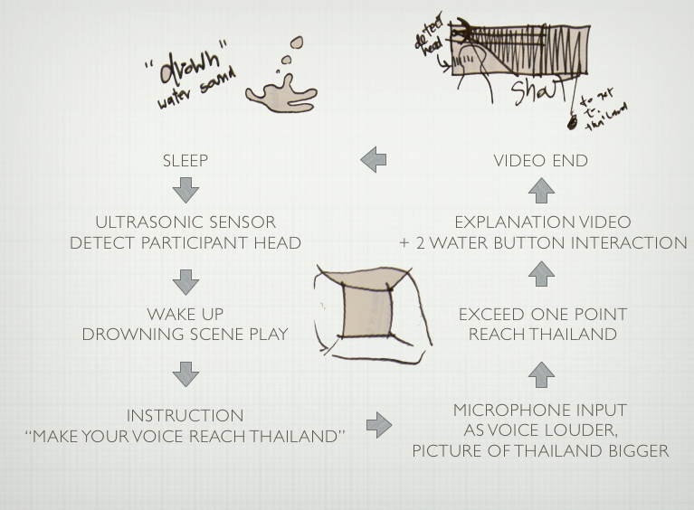

PRECEDENTS
{kind=link}
FREE BURMA’S POLITICAL PRISONERS
A ONE-DAY EVENT AT GRAND CENTRAL TERMINAL
Tuesday, June 22, 2010
Human Right Watch, in partnership with JWT
Carrying the message from the land of democracy to this promise land, where the voices of people are suppressed.
It’s really beautiful how this stunning one-day installation can evoke the mind of people to think about the country on the other side of the globe. Especially, looking back from now that Burma just announce to release all political prisoners just a few days ago.
{kind=link}
{kind=link}
{kind=link}
{kind=link}
{kind=link}

related links:
http://culturalcapitalists.wordpress.com/2010/06/24/burma-campaign-performance/
http://www.hrw.org/sites/default/files/related_material/Art%20Installation%20Presentation.pdf
{kind=link}
{kind=link}
UNCURSED
YOKO ONO
{kind=link}
{kind=link}
{kind=link}
{kind=link}
{kind=link}
First time I got into the work of this well renown artist, the one from the rising time of fluxus, the doubt of her skill then suddenly long gone. Not just because how the experience in the gallery is so sense awakening. But story behind her work is also very beautiful. She tribute her work to her childhood impression on Japanese hero in the history class. How he accept seven misfortunes and eight sufferings in exchange of peacefulness of his people. And as she grow up she understand that life is hard and to bear all those responsibilities are even harder. So she started to think about bringing seven fortunes and eight treasures to other people instead.
This exhibition is traveled from Hiroshima, the city of the only country which suffered a nuclear disaster twice in the same century. So she give these blessing to those people who suffered from it. And now it is here, come to the country who caused the first nuclear disaster. I sense the sign of peace she offering to all of us to uncursed all the hatred we had through this piece.
Yoko Ono says:
“When we were children, we learnt at our elementary school how the warrior, Shikanosuke Yamanaka, vowed to endure seven misfortunes and eight sufferings, thereby giving all the negative things to him that would have been given to the people of his city. I was so impressed with his selfless devotion to people, I wanted to be like him when I grew up. Then I realized that so many challenging situations were given to me in life. Much later, I wondered if it would not be better to ask for seven good fortunes and eight treasures….which I promptly did. It changed my life.
In my recent exhibition THE ROAD OF HOPE in Hiroshima, the city of the only country which suffered a nuclear disaster twice in the same century, I offered blessings to the people of Hiroshima and prayed that they would be given seven good fortunes and eight treasures.”
Ono now envisions these same blessings for New York as a reminder of our global connectedness and the universality of human experience to “uncurse” ourselves and move on.
related links:
http://imaginepeace.com/archives/16189
http://www.vogue.com/culture/article/yoko-onos-uncursed-opens-in-new-york/
picture by:
Parinot Kunakornwong (except the first one from Yoko’s site)
COMPARATIVE STUDIES
{kind=link}
{kind=link}
{kind=link}
Now that I’ve decided the clarification for my concept and execution on which part of flooding I’ll take part. My work would be more tends toward HRW’s Burma exhibition more than Yoko’s uncursed. Since the situation from Burma and Thailand context share a lot more common and, still, we too need to fight more to get to the point of free speech and be more democracy. My take is on fighting for revising lese majeste law in Thailand that has been used as political weapon for decades (more details on revised concept page.) By using flooding situation as a catalyze that allow us to see nature of this problem that surface after flooding has gone.
MORE PRECEDENTS
PULSE TANK
RAFAEL LOZANO-HEMMER
One from the artist’s Pulse series which play around with pulse sensor. (The most inspiring one for me in this series is Pulse Spiral.) In this project, it’s interesting how he combine the actual wave of the water with the projection technique to make the interesting visualization.
related links:
Pulse Tank
http://www.lozano-hemmer.com/pulse_tank.php
INTERACTION DIAGRAM
Inspired from Burma’s free political prisoners campaign, the attitude of fighting against inequality seems to be much more appropriate for Thailand’s context on lese majeste and how it questions Thai society in the same time about their relationship between themselves and the country. With this strong message, it’s worth spreading and participates can also really help to make changes by signing petition.
{kind=link}
Combining the inspiration from Chaw Ei Thien’s performance in Burma’s installation with the limitation of timeframe and installation space for making this installation piece. I created this form that instead of emitting the content into the room that people can walk in, participants have to install their head into this piece to perceive it.
The exterior will be decorated with ‘Amazing Thailand’ traveling campaign that I saw every time I go to Time Square. The perception that Thai government want the world to see. Yet, as people put their head into my piece, this allows them see how things look from the inside of it.
Attitude inspiration for this part,,,
from Censorship Paradise.
{kind=link}
However, water is still the main element of this project. There will be a water button feature in the piece. Now I’ve simplified it into just two buttons, yes and no, for left and right hand. So when you plug your head into the piece you can see and hear the water. While your hand also really touch the water to interact with it.
Diagram walkthrough
{kind=link}
- The system started from sleep when participant put his head into the piece, sensing that using proximity ultrasonic sensor.
- The first and the main part of the interaction started after a short introduction. Participant have to make a noise (aka shout) while the projector show the drowning scene to survive and continue the story. This is a metaphor of how voices of the people has been covered by government through using lese majeste law.
- As they survive from the drowning scene, the story continue and introduce participant to Ar Kong’s case that happened at the same time with flooding and how Thai media act just like the water that drown its own people to deadly silent.
- Between these narration, there will be some choices participant can make in yes-no fashioned. The answer can be triggered by water buttons (video of water buttons I did on Pcomp.) The story will shift a bit according to participant’s answer, but the main story line remain the same.
- At the end of the story, encourage people to sign the petition for Ar Kong’s case against lese majeste law. How this law itself has been abused and eroding this country which is no one in the society both liberalist or royalist would want to.
- Next to the piece, people can sign their name to the petition.
- The petition will be collected and send to join the main petition in Thailand.